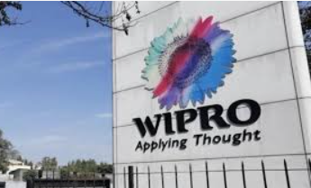

Pune, one of India’s largest cities, is a longtime leader in technological innovation. Often referred to as the “Oxford of the East” due to its highly regarded educational and research institutions, Pune has a robust pool of talent — making it fertile ground for software companies to grow. From multinational conglomerates to home-grown startups, the following companies are all prominent fixtures in this city’s vibrant tech and IT ecosystem.

Valued at $72 billion, Infosys is one of the largest tech companies in India. The company is listed on the New York Stock Exchange, and offers a variety of business consulting, information technology and outsourcing services, helping businesses across more than 50 countries navigate their digital transformation. Infosys was founded in 1981 in Pune and still has a mega campus here, in addition to its headquarters in Bangalore and offices around the world.
Accenture is a global leader in digital, cloud and security services, as well as tech consulting. The company is based in Dublin, Ireland, and has several offices throughout India — three of which are in Pune. In 2022, Accenture opened a new innovation hub in the city, where it helps clients innovate in advanced technologies like AI, extended reality, IoT, blockchain and quantum computing. This innovation hub is part of Accenture’s global innovation network, and integrates with its two other hubs in Bangalore and Hyderabad.
Mindtickle provides a range of services to help companies increase their revenue productivity. The sales software provider offers everything from onboarding training to customer engagement support, counting major brands like LinkedIn, Cisco and Okta among its many clients. The company is headquartered in San Francisco, California, and has significant operations in Pune.
An affiliate of the Mahindra Group, Tech Mahindra is an IT services and consulting company, helping thousands of global customers leverage technology like 5G, blockchain, AI, metaverse and quantum computing. It has a variety of subsidiary companies, too, including Italian car design firm Pininfarina and Indian telecommunications company Comviva. In 2023, the company announced a partnership with AWS to create an immersive sports cloud platform powered by AI, machine learning and virtual reality.
Wipro provides IT, consulting and business process services, including cloud computing, security, digital transformation and robotics. With a market capitalization of nearly $25 billion, Wipro is considered to be one of India’s most prominent tech companies, and its staff is made up of 245,000 employees around the world, according to its website. In addition to its locations in the Americas, Africa, Europe, the Middle East and Asia Pacific, Wipro has several offices throughout India, one of which is in Pune.
This link will take you to Pune's Food
Pune's Food